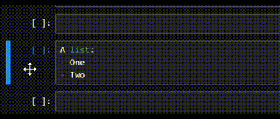
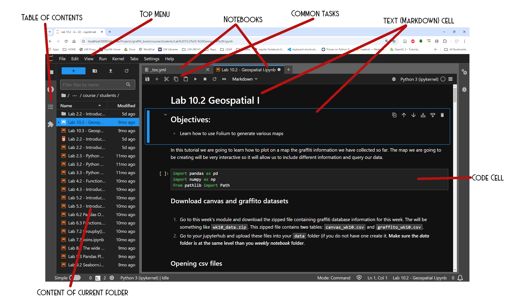
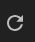

Notebook Basics#
Jupyter Notebooks#
As part of learning the different ways in which we can use Python we will be using the Jupyter Notebook environment (henceforth notebooks). Notebooks are great environments to explore data and learn data science coding. It allows the easy combination of text, graphics and code. You will be able to write code and immediately see the results after you execute it. A notebook is typically made out of cells. You can think of a cell as a paragraph in a text. Typically, these cells contain either bits of code or text.
Currently, the are different softwares you can use to write and run a notebook. Some of the most common are: Jupyter, Jupyterlab and VS Code. All of these require that you install them on your own compute before you can write and run a notebook. In this course we will use JupyterHub which allow us to run Jupyter notebooks on the cloud (another resource is Google’s Colaboratory or Colab) instead. The advantage of using this resource is that you can write and run notebooks from any browser without the need to install anything on your own computer. You will also be able to save all your work directly on your cloud space.
Cell types#
In JupyterHub, there are two main type of cells: code cells and text cells.
Codecells will contain bits of code that are meant to be executed together.Textcells contain normal text or formatted text called Markdown text (more on this later).
You can switch from one type of cell to another using the following shortcuts:
code: Ytext: M
but in order to do so you have to make sure that you are outside of the cells as shown below
{kind=link}
Notebook parts#
Use the following image to identify some basic part of jupyter lab.
Shortcuts#
Notebooks offer a series of shortcuts that you can use to speed up certain operation. You can use some of the common tasks buttons or options in the top menu. For some of these shortcuts to work, your cursor needs to be outside the cell (you will need to click on the outside the cell) while others operate inside the cell. Here are some of the most common,
M |
Convert cell to a markdown cell |
Y |
Convert cell to a code cell |
A |
Insert a new cell above selected cell |
B |
Insert a new cell below selected cell |
C |
Copy cell/s |
X |
Cut cell/s |
V |
Paste cell/s below selected cell |
DD |
Delete selected cell/s |
Ctrl or ⌘ + Enter |
Run cell |
Shift + Enter |
Run cell and advance to the next |
Ctrl or ⌘ + / |
Toggle selected lines to comments |
Ctrl or ⌘ + Shift + - |
Separate selected lines into a new cell |
Use as a calculator#
One way to think of a notebook is as a very powerful calculator. One that allows you to do all kinds of things with data (read it from a file, plotted, transform it, and so on). We can do all of this in the way of variables. In theory, you can use any name to label a variable. However, there are some commonsense guidelines you want to keep in mind:
Do not use Python reserved words. This are words that mean something to Python. Granted, it is hard to tell, at this point, which are these words. You will learn some of them as we proceed.
Do not start your variables with numberals or special characters, e.g. @,#, $, ! and so on
Name a variable in such a way that that will help you remember what the variable stands for. You do not want to use a very long name but neither one that is too short that leaves you guessing.
As we proceed you will learn that variables can hold all sort of information, for now we will use it to store numbers (integers and decimal or floating-point) and strings.
a = 7
b = 10
c = a + b
c
17
a, b
(7, 10)
Unless you change them explicitly, variables (no matter what they hold) will retain their value throughout the entire notebook.
Caution
You can delete a cell where you declared a variable with a certain value and the variable will still retain that value.
Restart Kernel#
You will want to restart the kernel of a notebook whenever you get some strange results or run into some errors (think about it as rebooting your computer). This is done by clicking on the following key,
Caution
Keep in mind that it is possible to run cells in different order. This can be dangerous as you might get a certain result thinking that comes from a set of cells running in sequence when it is not the case. Before submitting a notebook run all cells from the top.
Hint
Restart the kernel and run all cells before you submit a notebook. This is the only way to make sure that you the results you are getting are the ones that you expect.
Final Word#
Notebooks are great to experiment with code and see what happens. If you are new to coding, or have had a bad experience with it, you might feel apprehensive about running some bit of code for fear that doing so will ‘break’ something.
The best way to learn how something works, how code works, is by tinkering with it. How do you do that??
Don’t be afraid to change bits of the code, re-run the cell/s and see what happens. The worst thing that can happen is that you get an error! Is this so terrible?
This course is meant to introduce you to the use of Python for data science analysis. We will be covering quite a few topics, some of which we would spend much more time drilling in. If you get into coding, not all of you will,… you are urged to take the lead and seek out additional learning venues (there are tons out there!!!). I will help you by including a few links here an there but it is really up to you!! If you want to learn more do not hesitate to ask!!!